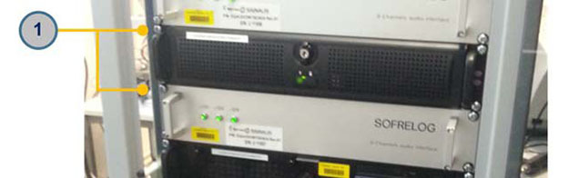

Installation of the Computer (Service Computer,
VMD, RDU).
-
Install the new unit by performing the removal steps in
reverse order.
Figure 1.
Computer (Service Computer, VMD, RDU) system

- 1
- Fixing screws
-
Plug in the cables for a Radar Digitizing Unit System as
follows:
- DVI port at RDU -network cable - VGA/DVI adaptor - IQ module
- LAN1 port at RDUx - data cable - GPUx
- LAN2 port at RDU - network cable - LAN port at Ethernet
Switch
- USB1 port at RDU -data cable - IQ module
- Earthing connector at PDU - earthing cable - Grounding bar
- Pwr_01 port at RDU - power cable - Rack PDU
- Pwr_02 port at RDU - power cable - Rack PDU
-
Plug in the cables for a Camera VMD Computer System
follows:
- DVI port at RDU -network cable - VGA/DVI adaptor - IQ module
- LAN1 port at RDU - network cable - LAN port at Ethernet
Switch
- USB1 port at RDU -data cable - IQ module
- Earthing connector at PDU - earthing cable - Grounding bar
- Pwr_01 port at RDU - power cable - Rack PDU
- Pwr_02 port at RDU - power cable - Rack PDU
-
Plug in the cables for a Service Computer System as
follows:
- DVI port at RDU -network cable - VGA/DVI adaptor - IQ module
- LAN1 port at RDU - network cable - LAN port at Ethernet
Switch
- USB1 port at RDU -data cable - IQ module
- Earthing connector at PDU - earthing cable - Grounding bar
- Pwr_01 port at RDU - power cable - Rack PDU
- Pwr_02 port at RDU -power cable - Rack PDU
- Check if LEDs are on (power, drive activity, network
activity, diagnostics).